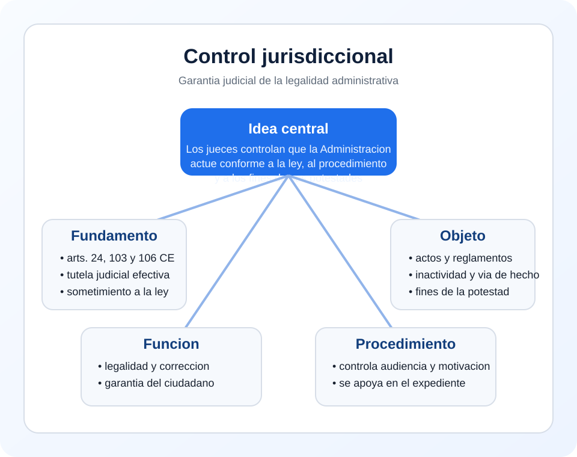

Tema 1 · Punto 3.2 · Resumen
Control jurisdiccional
Es la fiscalizacion judicial de la actividad administrativa para comprobar que la Administracion actua conforme a la Constitucion, a la ley, al procedimiento debido y a los fines que justifican sus potestades.
Idea-clave de examen: la Administracion tiene poder, pero el juez garantiza que ese poder no sea arbitrario.
Lo imprescindible para memorizar
- Su base principal esta en el art. 106 CE.
- Se proyecta sobre actos, reglamentos, inactividad y via de hecho.
- Se ejerce tipicamente por la jurisdiccion contencioso-administrativa.
- Es la garantia externa del procedimiento administrativo.

1. Concepto
El control jurisdiccional es el examen judicial de la actividad administrativa para verificar su legalidad y el respeto a los fines que justifican el ejercicio de las potestades publicas.
2. Fundamento constitucional
- Art. 103 CE: sometimiento pleno de la Administracion a la ley y al Derecho.
- Art. 106 CE: control judicial de la potestad reglamentaria, de la legalidad y de los fines de la actuacion administrativa.
- Art. 24 CE: tutela judicial efectiva.
3. Que controla
| Objeto | Control judicial |
|---|---|
| Actos administrativos | Competencia, procedimiento, motivacion, hechos y legalidad |
| Reglamentos | Conformidad con la ley y con la Constitucion |
| Inactividad | Si la Administracion debio actuar y no lo hizo |
| Via de hecho | Actuaciones materiales sin cobertura juridica suficiente |
4. Funciones
- garantizar la legalidad;
- proteger al ciudadano frente a actuaciones lesivas;
- corregir actos y disposiciones contrarios a Derecho;
- equilibrar institucionalmente el poder administrativo.
El control judicial es la garantia ultima de que el procedimiento y la decision administrativa tengan eficacia real en el Estado de Derecho.
5. Relacion con el procedimiento administrativo
El juez controla si la Administracion ha respetado audiencia, motivacion, prueba, competencia y demas exigencias procedimentales. Por eso el procedimiento es la base documental del control jurisdiccional.
6. Repaso final
Formula util para examen: el control jurisdiccional es la fiscalizacion judicial de la actividad administrativa para asegurar su conformidad con la Constitucion, la ley, el procedimiento debido y los fines de la potestad ejercida.
- se apoya en el art. 106 CE;
- controla actos, reglamentos, inactividad y via de hecho;
- es la garantia ultima frente a la arbitrariedad administrativa.